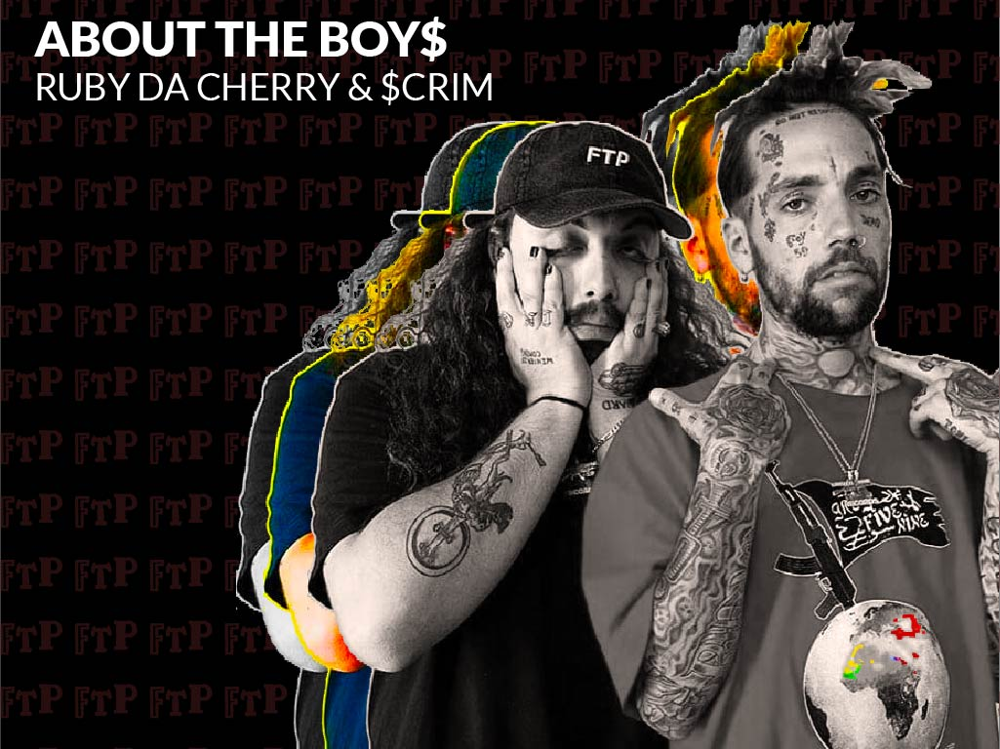

$UICIDEBOY$ ; 2014 TO THE GRAVE
Suicideboys is an American hip hop duo from New Orleans, Louisiana, founded in 2014 by cousins Ruby da Cherry and Scrim. Via the music sharing platform SoundCloud, the duo rose to popularity for their abrasive, self-produced beats, as well as their harsh lyrical content and themes prominently featuring substance use disorder and suicidal ideation.
MEET THE BAND
On the left: “$crim” is Scott Arceneaux Jr. (born April 11, 1989), is a rapper from New Orleans, Louisiana. $crim is currently one half of $uicideboy$. He gained attention by venting his inner issues, and sticking to a proven plan for each song.
On the right: “Ruby da Cherry” is Aristos Petrou (born April 22, 1990) is a rapper from Metairie, Louisiana. Ruby is currently one half of $uicideboy$. Ruby is considered a god in the rap/underground scene.
follow the boy$
$B instagram
$B twitter
ruby instagram
ruby twitter
scrim instagram
scrim twitter
8